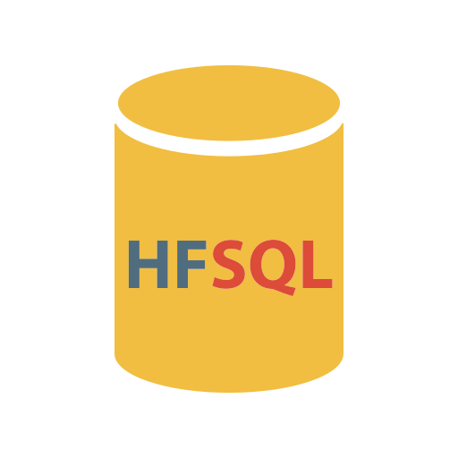

Environnement de qualité, opérationnel immédiatement
Les plateformes d’exploitation du Cloud sont préconfigurées pour une prise en charge automatique depuis les environnements de développement PC SOFT : WINDEV, WEBDEV et WINDEV Mobile. Les déploiements sur les plateformes du Cloud sont simplifiés et automatisés.
Vous pouvez ainsi vous consacrer pleinement à la réalisation de vos applications, sans les contraintes de l’exploitation.
Interface d'administration sécurisée
Vous disposez d’une interface d’administration pour créer et gérer vos plateformes. Vous pouvez à tout moment décider d’activer ou de suspendre l’activité d’une plateforme.
Disponibilité
Les plateformes sont conçues pour garantir une haute disponibilité, même en cas de panne matérielle.
Évolutivité
Vous pouvez créer des applications exigeant différentes montées en charge et adapter rapidement le dimensionnement de vos plateformes pour répondre aux variations d’utilisation.
Option de sauvegarde
Une option de sauvegarde peut être activée pour réaliser une sauvegarde quotidienne de votre plateforme. Cette sauvegarde est réalisée sur un espace de stockage indépendant de la plateforme. La durée de rétention de chaque sauvegarde est de 14 jours.
Paiement à la consommation
Le Cloud vous permet de ne payer que ce que vous consommez. Les heures d’utilisation de vos plateformes sont facturées uniquement si votre plateforme est active, autrement dit uniquement quand vos applications sont disponibles et accessibles. De même, seul l’espace de stockage occupé est facturé.
Consultez les tarifs
Tarifs adaptés à l’intensité d’utilisation de la plateforme
Le tarif horaire des heures d’utilisation peut être modulé en fonction de l’intensité d’utilisation de votre plateforme. Cela vous permet d’ajuster les frais au plus près de vos besoins.

Stockage et bases de données
Chaque plateforme met à votre disposition un espace de stockage. Cet espace de stockage est occupé par les ressources de vos sites ou Webservices, vos bases de données HFSQL, ainsi que vos installations d’applications WINDEV. Le Cloud vous permet de bénéficier du Serveur HFSQL sur chacune de vos plateformes sans frais supplémentaires.
Points de restauration
Avant d’effectuer une mise à jour de vos applications, vous pouvez créer un point de restauration. En cas d’anomalie de fonctionnement suite à la mise à jour, vous pouvez facilement revenir dans l’état antérieur à la mise à jour, en restaurant le point de restauration que vous aurez créé.